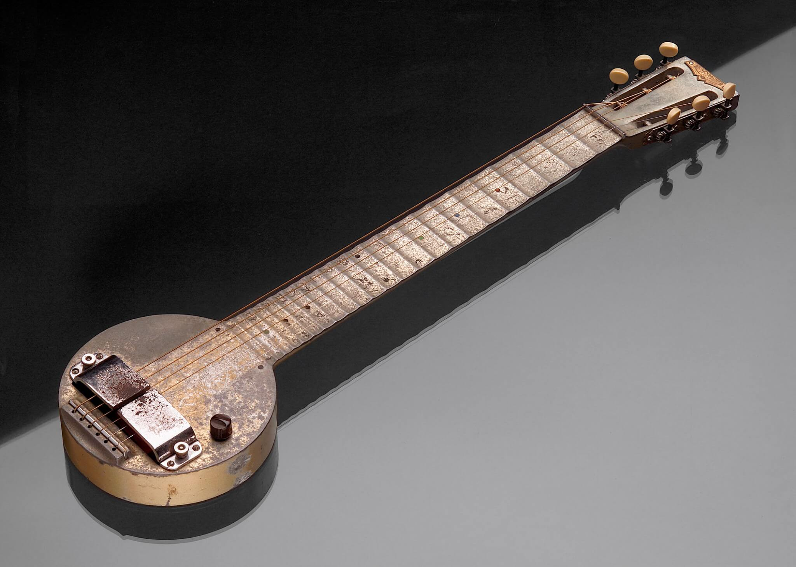
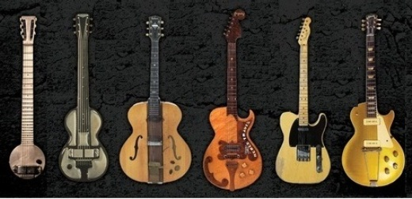
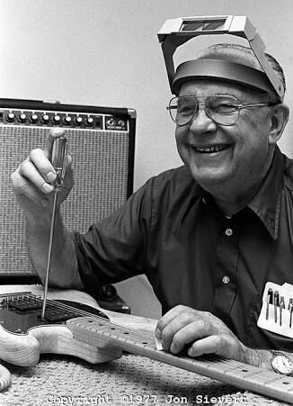

La Guitarra Eléctrica.
El mundo que rodea la guitarra electrica es muy amplio e influye mucho en la historia moderna.
Nos lleva a 1930, donde después de ser despedido por la Compañía en la que trabajaba, George Beauchamp comenzó a buscar nuevas maneras de aumentar el volumen de la guitarra electrica.
Era de conocimiento público por este tiempo que al pasar un cable a través de un campo magnético producía un cambio en la intensidad del campo magnético que a su vez podría ser usado para crear una corriente variable eléctrica en una bobina de alambre correctamente acoplada.
Este mismo principio fue la base de motores eléctricos, generadores, agujas de fonógrafos, altavoces, etc. Ya en 1925 Beauchump había estado experimentando con el uso de agujas de fonógrafo para producir una guitarra electrica solo en una pieza de dos por cuatro, y creía que si un dispositivo podía “recoger” las vibraciones de cada cuerda individual, y convertir esas vibraciones en una variación proporcional en la corriente eléctrica entonces el sonido podía ser amplificado.

Beauchamp y Paul Barth se juntan y surge la magia.
 Después de muchos meses de ensayo y error Beauchamp, junto con Paul Barth desarrollaron un trabajo con imanes de herradura y seis cuerdas. Las cuerdas de la guitarra eléctrica pasaban a través de los imanes con cada polo situado de manera que se concentra un campo magnético independiente sobre cada cuerda.
Con el prototipo de guitarra eléctrica en la mano se acercó a Beauchamp Adolph Rickenbacher, para la fabricación de los cuerpos de metal de los resonadores. Formaron una empresa y decidieron llamarla “Rickenbackers instruments”. Se comenzó a fabricar el “Frying Pan”, que de inmediato se hizo popular convirtiéndose en el primer fabricante de guitarras electricas en la historia de la guitarra.
La Vivi Tone guitar
Probablemente el primer hombre en la historia de la guitarra electrica en construir y comercializar una guitarra electrica “española” fue Lloyd Loar.
Loar era ingeniero acústico de Gibson, legendario por sus contribuciones al diseño y desarrollo de la mandolina. Loar también había experimentado con la amplificación eléctrica de la guitarra electrica desde los principios de la década de 1920, y en 1933 creó una nueva empresa “Vivi-Tone” como una subdivisión independiente de Gibson.
Vivi-Tone se dedicó a la producción de una sola cosa, guitarras electricas de estilo español. La guitara electrica española parecía el futuro de la guitarra pero el fracaso de Vivi-Tone inspiró a Gibson para crear la guitarra electrica que haría historia de la guitarra y revolucionaria el instrumento, el ES-150. (“ES” viene de Español y 150 el precio en dolares)
Incluso con el gran éxito que fue la “ES-150” tenía todavía algunas características que mejorar. Las vibraciones de cuerpo hueco se recogían y amplificaban y había problemas con la retroalimentación, distorsión y connotaciones indeseables. Un destacado guitarrista de jazz e inventor “Les Paul” cree que la solución consistía en introducir una guitarra eléctrica de cuerpo sólido, y su intento fue un éxito en la eliminación de estos problemas.
Se componía de dos pastillas simples magnéticas construido por Paul, y montado en un pedazo de pino de 4 x 4, pegando las dos mitades solidas del cuerpo de la guitarra electrica. El resultado fue una buena guitarra electrica de jazz sonando sin matices no deseados, en 1946, Les Paul tomó su nueva guitarra electrica de cuerpo sólido de Gibson.
Gibson fue poco que entusiasta sobre las perspectivas de una guitarra electrica de cuerpo sólido, convencido de que los consumidores no lo aceptarían. Todos los intentos anteriores para introducir una guitarra de cuerpo sólido habían fracasado, pero un hombre sin embargo, Leo Fender, creía que las guitarras electricas de cuerpo sólido eran el verdadero futuro del mercado de la guitarra.
El papel de Fender en la historia de las guitarras.
Fender, que era dueño de un taller de reparación de radio en Los Ángeles habían construido un prototipo de guitarra electrica de cuerpo sólido hecho en madera de roble en el año 1943 que alquilaba a los músicos con el fin de recibir sugerencias de ellos. En 1949, la historia de la “guitarra electrica Fender” se hizo cuando lanzó lo que se convertiría en la primera guitarra de cuerpo sólido, la “Telecaster”.
La guitarra de cuerpo sólido de Fender tenía todas las ventajas de Paul, pero que nunca llamó a los guitarristas de jazz. Los guitarristas de jazz preferían el sonido más redondo más suave e incluso algo más acústico de la Gibson ES-150, pero la Telecaster se hizo muy popular con country, blues, y más tarde en los años 1950 y 1960 con los músicos de rock roll. El sonido es más agudo y eléctrico y puso la primera gran piedra del rock and roll.
Basado en el éxito de la Fender de cuerpo sólido Gibson tuvo una segunda mirada al diseño de cuerpo sólido de Les Paul y en 1952 se decidió construir una guitarra electrica de cuerpo sólido que se convertiría en el estándar de la industria. A pesar de la inspiración de la guitarra Gibson Les Paul fue nombrado así en última instancia, el diseño de la guitarra electrica de cuerpo sólido en realidad procedía de las nuevas empresas de Ted McCarty. Las pastillas fueron P-90, desarrollado originalmente en 1946 y tenían un sonido cálido, suave y muy versátil.
La primera guitarra semi-hollow.
Alrededor de 1961 Ted McCarty presentó el ES-335, una guitarra electrica de cuerpo semi-hueco diseñado para incorporar lo mejor de ambos modelos, rápidamente se hizo popular y utilizado por las influyentes guitarristas como BB King y Chuck Berry.
Tanto Gibson como Fender habían introducido nuevos diseños, la Gibson SG (guitarra electrica sólida) y la Fender Stratocaster, ambos se convirtieron en el estándar de guitarras para músicos de rock en la década de 1960, con la Stratocaster alcanzando su pico al convertirse en la guitarra de la opción utilizada por Jimi Hendrix.
Ha habido un puñado de otros fabricantes en la historia de la guitarra electrica que no son Gibson y Fender, tales como La Compañía Fred Gretch formado en Brooklyn en 1883, y han contribuido al desarrollo de la guitarra electrica.
La guitarra electrica tal como existe hoy es a todos los efectos prácticos de la misma forma como lo era en 1961. Incluso hoy en día la gran mayoría de las guitarras electricas que se venden en el mercado moderno son una Fender o Gibson.
{kind=link}